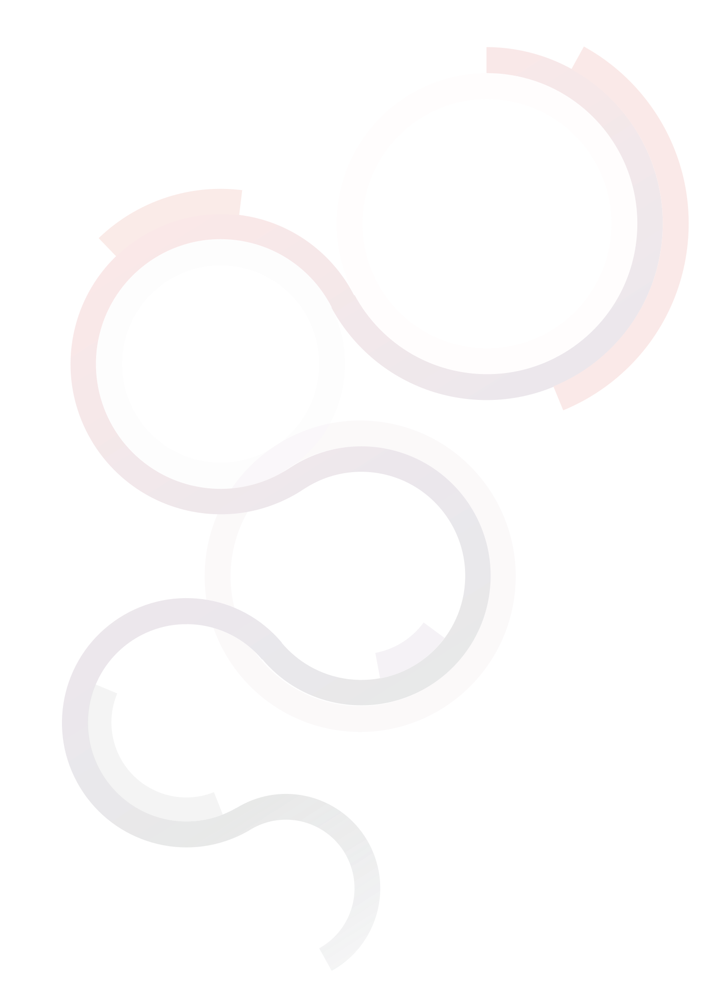
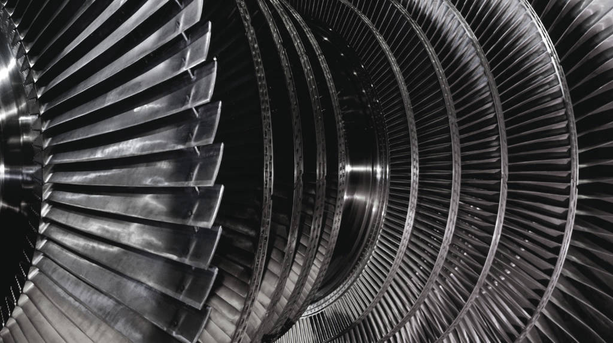

Bringing perception, reasoning, and autonomy into the systems that shape the physical world.

The physical economy does not run on language. It runs on reality. MatterMind is building the intelligence layer for that reality.
Today’s AI can reason through language, but the physical economy runs on systems, constraints, and real-world cause and effect. Its data, context, and operational knowledge remain fragmented across machines, models, processes, and people.
MatterMind creates a foundational layer for machine-readable industrial reality. Systems that learn from operations, understand cause and effect, and continuously evolve to shape better realities.
With Connected Understanding, MatterMind helps physical systems produce more, waste less, and operate smarter by eliminating hidden inefficiencies.

Operational knowledge becomes measurable efficiency. Ownership stays with you.
Correctness before growth. Simulation before action. Trust before autonomy.